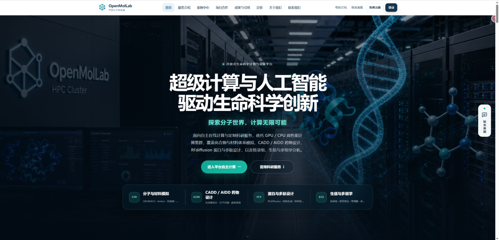
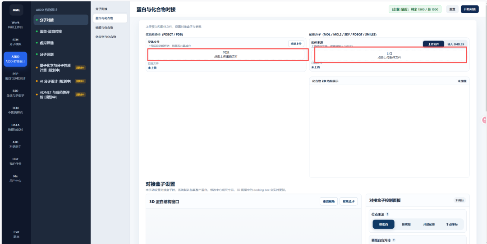
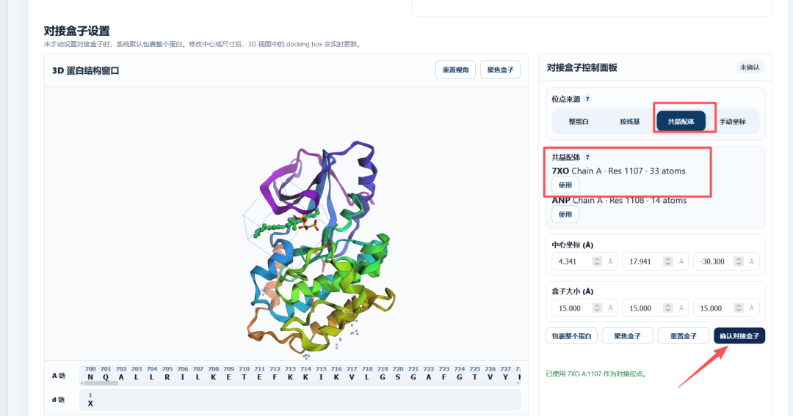
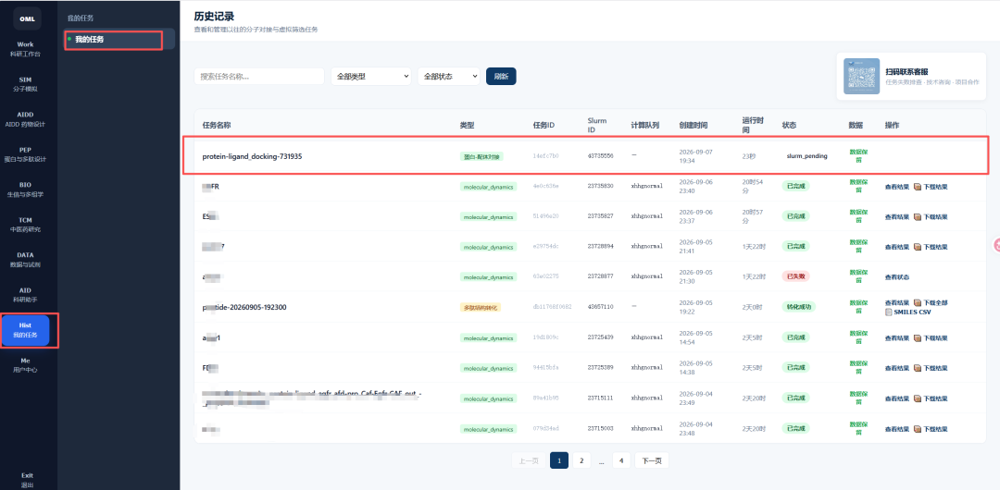
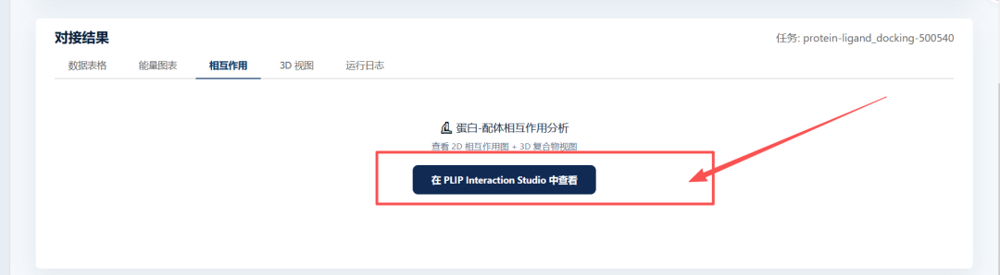
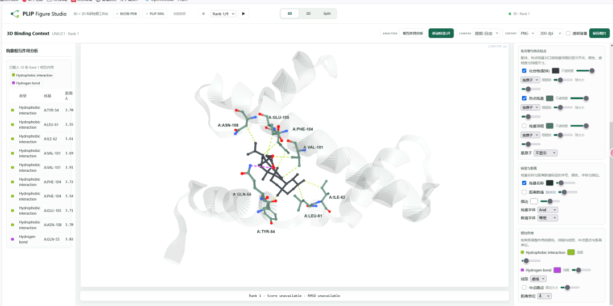
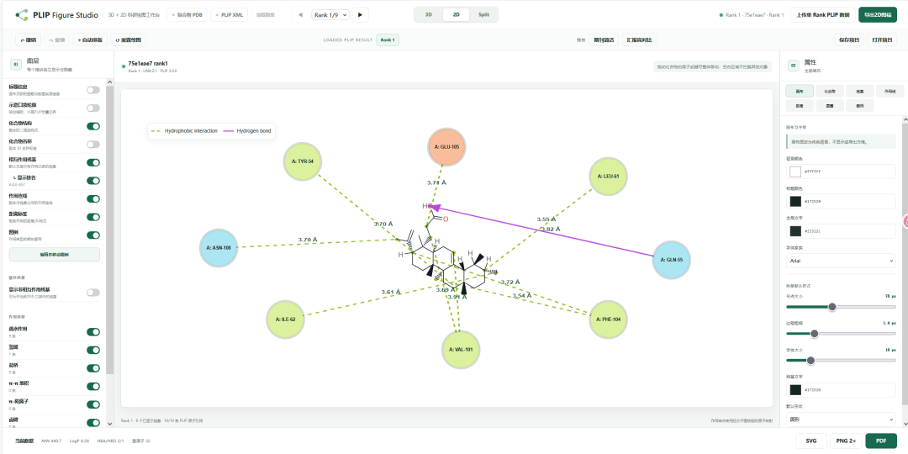

摘要LLM 归库摘要
- 核心内容： OpenMolLab 是一个面向生命科学研究的在线计算与设计平台。公众号文章演示其分子对接流程：上传受体和配体、设置对接盒、查看任务历史、进入结果分析，并用 PLIP Interaction Studio 生成蛋白-配体的 2D/3D 互作图。官网宣称还覆盖分子模拟、CADD/AIDD、虚拟筛选、蛋白/多肽设计、生信与多组学等模块。
- 适用场景： 天然产物或候选化合物与靶点的相互作用预测、虚拟筛选、先导化合物优化、分子机制解释，以及需要 2D/3D 互作图的计算化学结果展示。
- 输入： 受体结构支持 PDBQT/PDB；配体结构支持 MOL、MOL2、SDF、PDBQT 和 SMILES。对接盒来源可选择整蛋白、按残基、共晶配体或手动坐标。
- 输出： 对接数据表、能量图表、互作分析、3D 视图和运行日志；可跳转到 PLIP Figure Studio，调整互作样式后导出 SVG、PNG 或 PDF。
- 关键参数/步骤： 上传结构 → 选择配体来源 → 选择共晶配体或其他口袋定位方式 → 核对中心坐标与盒子尺寸 → 确认对接盒 → 提交任务 → 在任务历史查看状态和下载结果 → 在结果页打开 PLIP 作图。
- 常见错误/注意事项： 不要把单次对接分数直接当作亲和力结论；应结合口袋选择依据、共晶配体、重复对接、构象复核、MM/GBSA 或实验验证。关键结果应保留输入文件、参数、任务日志和输出结构，便于复核和引用底层软件。
- 与口腔生信连接： 可用于牙周炎、口腔鳞癌或龋病相关靶点与天然产物、抗菌剂、抗炎化合物的分子对接和互作可视化，作为干湿结合课题中的候选机制验证环节。
- 下一步处理： 用一个已知复合物或自有候选靶点/配体试跑，检查配体识别、对接盒定位、任务队列、结果下载和 PLIP 导出是否稳定；并对照 分子对接结果如何更有说服力？15个影响结果的小技巧 核查结构选择、口袋设置和结果解释。
- 归库说明： 分类到 03 生信教程与工具库 / 02_wiki / methods，置信度 0.93，理由：内容为在线分子对接与可视化平台流程，工具属性强；未命中敏感信息；正文无 R/Python/Shell 可复用代码块，因此未同步远程代码库。
OpenMolLab 官网入口：https://openmollab.top。帮助文档：https://www.yuque.com/canyuetian/kb/yp2vlcsn80mfik18?singleDoc#。公众号文章称“全额免费试用”，官网则区分公益使用、按平台额度的标准计算和项目合作，正式使用前应以平台内额度和当前条款为准。
平台定位#
OpenMolLab 的首页定位是“开放分子实验室”，依托 GPU/CPU 高性能计算集群，提供自主在线计算与定制科研服务。它不是单纯的命令行软件，而是把任务上传、参数设置、队列状态、结果文件和历史记录放在网页工作台里。
官网列出的核心方向包括：
- 分子与材料模拟：GROMACS、Amber、自组装、轨迹分析，正文另提到 MM/GBSA 与自动报告。
- CADD/AIDD 药物设计：分子对接、虚拟筛选、量子化学、AI 分子设计、ADMET 与先导优化。
- 蛋白与多肽设计：RFdiffusion、结构生成、序列优化，并提及蛋白、多肽、抗体和酶设计。
- 生信与多组学：单细胞、转录组、蛋白组、代谢组与多组学整合。
- 其他扩展业务：中医药与天然产物研究、数据与试剂查询、科研助手等。

文章演示的分子对接流程#
1. 上传受体与配体#
文章演示的是 AIDD 药物设计中的“蛋白与化合物对接”。左侧填写受体蛋白结构，截图显示支持 PDBQT 或 PDB 文件；右侧填写配体，来源可选本地文件上传或粘贴 SMILES，页面示例支持 MOL、MOL2、SDF、PDBQT 和 SMILES。平台会渲染配体的 2D 结构，便于快速核对分子是否识别正确。

2. 设置对接盒#
页面提供“3D 蛋白结构窗口”和“对接盒控制面板”。文章示例优先使用“共晶配体”作为对接盒定位依据：平台识别到 7XO Chain A - Res 1107 - 33 atoms，点击“使用”后，系统显示已用 7XO A:1107 作为对接位点，并给出中心坐标和盒子尺寸。用户仍需确认口袋是否对应研究问题，再点击“确认对接盒”。

3. 追踪任务历史#
提交后可以在“我的任务”中查看任务名称、类型、任务 ID、计算队列、创建时间、运行时长、状态和数据下载入口。文章截图显示分子对接任务处于 slurm_pending，说明平台使用计算队列调度任务。其他截图还包含分子动力学任务及其完成或失败状态，可据此排查失败任务并下载结果。

4. 查看对接结果#
对接结果页包含数据表格、能量图表、相互作用、3D 视图和运行日志。文章重点演示“相互作用”页中的蛋白-配体互作分析，可通过按钮进入 PLIP Interaction Studio，查看 2D 相互作用图和 3D 复合视角。

5. PLIP 2D/3D 作图#
PLIP Figure Studio 支持按构图类型、氢键、疏水作用、盐桥、π-π 相互作用等调整显示样式。3D 视图可标注关键残基和作用距离；2D 视图可显示残基节点、氢键和疏水作用，并调整背景、残基样式、字体和距离标注，最后导出 SVG、PNG 或 PDF。


使用建议#
- 选结构时先确认研究问题对应的蛋白状态、生物学组装体、口袋完整性和共晶配体，不要只看分辨率或最低对接分。
- 有共晶配体时优先检查它是否与目标配体机制相似；没有共晶配体时，可结合文献位点、口袋预测或残基选择，并保留选择依据。
- 对接分数应作为排序或筛选线索，不应替代结合能计算、动力学验证、突变实验或活性实验。
- 结果报告应记录平台模块、底层软件、参数、任务时间、输入文件和日志。官网也建议按实际流程引用 AutoDock Vina、GROMACS 等底层工具。
- 用于文章图形前，检查 PLIP 图中的残基编号、互作类型和距离标注是否与原始输出一致。
证据边界#
- 本笔记基于 2026-09-22 抓取的公众号文章和官网首页快照整理，未实际试跑平台任务。
- 官网关于模块覆盖、算力、累计用户和任务数量等表述属于平台自我介绍，尚未逐项核验。
- 文章截图显示企业版剩余额度 1500/1500，但当前额度规则、免费范围和任务限制仍需以登录后的平台页面为准。
相关笔记#
- 分子对接结果如何更有说服力？15个影响结果的小技巧